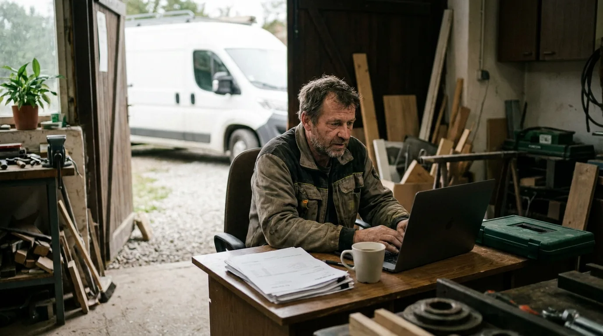

Peníze z auta.Jezdíte dál.
Firemní vůz od vás dočasně vykoupíme a výkupní cenu pošleme na účet. Vy s ním dál jezdíte za zakázkami — a po dobu rezervace ho můžete mít zpět za cenu, kterou znáte předem.
Nezávazná žádost zdarma · výsledek za 2 minuty · Raději zavolat? 800 123 456

Pozor! Tato služba není zdarma — za rezervaci možnosti zpětného odkupu platíte měsíční poplatek.
Nezávazně · všechna čísla předem · jak to funguje férově
Dílna, pole nebo depo — vyberte, co vám vydělává
Stejný férový model pro auto řemeslníka, traktor farmy i tahač dopravce: dočasně vykoupíme, vy jedete dál, odkoupíte zpět za předem známou cenu.
- Dodávky
- Kombi
- SUV
- Osobní firemní
- Traktory
- Kombajny
- Řezačky
- Manipulátory
- Tahače
- Návěsy
- Nákladní
- Dodávky
Dočasný výkup vozu se zpětným odkupem: tři věci, které se stanou, a sedm kroků, jak k nim dojdeme
Od formuláře k penězům na firemním účtu — bez inzerce, bez smlouvání a bez toho, aby vaše auto někde stálo.
Zjistíte svá tři čísla
Zadáte IČO a základní údaje o voze. Hned vidíte výkupní cenu, měsíční rezervační poplatek i cenu zpětného odkupu — v Kč, ne v procentech.
Technik přijede k vám
Prohlídka vozu proběhne u vás — v dílně, na stavbě nebo v provozovně. Potvrdíme konečnou nabídku a připravíme smlouvy.
Podpis a peníze na účet
Po podpisu vyplatíme výkupní cenu. Vůz dál používáte pro podnikání podle smlouvy a kdykoliv ho můžete odkoupit zpět.
Detailně: 7 kroků, u kterých vždy víte, co se děje
Vyplníte formulář
Online a nezávazně. Stačí IČO a údaje o voze — zabere 2 minuty.
Zavoláme si
Krátký hovor — ověříme údaje o vašem podnikání a o voze.
Dostanete nabídku
Výkupní cena, poplatek i cena odkupu — vše v Kč.
Vše černé na bílémPřijede technik
Prohlídka vozu u vás v provozu nebo v dílně — nikam nejezdíte.
Schválení
Potvrdíme konečnou nabídku výkupu.
Pojištění
Zařídíme převod pojištění vozidla za vás.
Řešíme za vásPodpis a peníze na účet
Podepíšeme smlouvy a pošleme výkupní cenu.
Nezávazně · pro OSVČ a firmy s IČO · žádné skryté kroky · přečíst podrobný průvodce
Prodat, čekat — nebo dočasně vykoupit
Poctivé srovnání tří cest. Dočasný výkup není zadarmo — ale auto vám dál vydělává a máte ho zpět za známou cenu.
| Prodat vůz natrvalo | Čekat na zaplacení faktur | Dočasný výkup CashAuto | |
|---|---|---|---|
| Kdy máte peníze | Až se najde kupec — týdny i měsíce | Za 30–90 dní, když odběratel zaplatí včas | Zpravidla do 24 hodin od podpisu |
| Můžete dál jezdit za zakázkami | Ne — vůz je pryč | Ano | Ano — podle smlouvy o užívání |
| Máte auto zpět | Ne | — | Ano — za cenu známou předem |
| Co to stojí | Nižší cena z bazaru, čas na inzerci a prohlídky | Zastavené zakázky, penále, ušlé tržby | Měsíční rezervační poplatek — v Kč, předem |
| Inzerce a smlouvání | Ano | — | Ne — technik přijede k vám |
| Pro koho | Kdo vůz už nepotřebuje | Kdo si může dovolit čekat | OSVČ a firmy, jejichž vůz vydělává |
Pozor! Tato služba není zdarma — za rezervaci možnosti zpětného odkupu platíte měsíční poplatek.
Férové řešení, na které se firma může spolehnout
Auto dál pracuje pro vás
Vůz dál používáte pro podnikání podle smlouvy o užívání vozidla — zakázky nestojí.
Vše víte předem
Výkupní cena, poplatek, termíny i možnost zpětného odkupu jsou jasně uvedené.
Bez inzerce a smlouvání
Nemusíte hledat kupce ani řešit prodej přes bazar — a vůz vaší firmě dál slouží.
Přehled v klientské zóně
Dokumenty, termíny, poplatky i stav zpětného odkupu — vše pro účetnictví na jednom místě.
Pro podnikání, ne pro spotřebitele
Služba je určena výhradně podnikatelům a firmám — spotřebitelům ji neposkytujeme. Pomáháme těm, jejichž vůz vydělává: vozí materiál, lidi i zakázky.
OSVČ a živnostníci
Rozjezd, provozní kapitál nebo nečekaný firemní výdaj — a auto dál potřebujete každý den.
Řemeslníci a stavební firmy
Materiál, nářadí nebo záloha na novou zakázku — dodávka mezitím dál jezdí.
Zemědělci a farmy
Osivo, hnojiva a nafta se platí na jaře, tržby přijdou po sklizni. Traktor jede dál.
AgroCashDopravci a logistika
Nafta, mýto a mzdy hned, faktury za 60–90 dní. Kapitál z tahače, který dál jezdí.
TechCashKolik za váš firemní vůz nabídneme?
Zadejte hodnotu vozu a hned vidíte všechna tři čísla — výkup, poplatek i cenu odkupu. Máte traktor nebo tahač? Použijte kalkulačku AgroCash nebo TechCash.
Měsíční rezervační poplatek za možnost zpětného odkupu a správu smlouvy je u firemních vozů 4 % z odhadní hodnoty vozu. Přesnou částku v Kč vidíte vždy před podpisem — a jde o provozní náklad, jehož daňovou uznatelnost posuďte se svým účetním.
Nezávazně · vše v Kč a předem · jak to funguje férově
Pozor! Tato služba není zdarma — za rezervaci možnosti zpětného odkupu platíte měsíční poplatek.
Co si podnikatelé říkají, než se ozvou
„Peníze byly na účtu do druhého dne a dodávkou dál jezdím na zakázky. Firma nestála ani den — přesně to jsem potřeboval.“
„Potřebovala jsem rychle doplnit materiál do salonu. Všechno bylo napsané předem — výkupní cena, poplatek i cena odkupu. Žádná drobná písmenka.“
„Odběratel platil faktury se zpožděním a já potřeboval překlenout výpadek. Po třech měsících jsem vůz odkoupil zpět přesně za cenu ze smlouvy.“
Ukázková čísla a recenze klientů (demo) · průměrné hodnocení 4,9 / 5
Vše přehledně na jednom místě
Dokumenty, termíny, rezervační poplatky i cena zpětného odkupu — kdykoliv v mobilu mezi zakázkami, s upozorněním před splatností.

Časté dotazy
Cash flow, ceny, oceňování — bez omáčky

Dočasný výkup vozu se zpětným odkupem: jak to funguje krok za krokem
Sedm kroků od formuláře k penězům na firemním účtu — a co přesně podepisujete. Průvodce pro OSVČ a firmy.

Kolik stojí dočasný výkup? Rezervační poplatek srozumitelně (příklad v Kč)
Tři čísla, která rozhodují: výkupní cena, měsíční rezervační poplatek a cena zpětného odkupu. Na příkladu vozu za 300 000 Kč.

Cash flow OSVČ: 7 způsobů, jak překlenout faktury po splatnosti
Zálohy, skonto, faktoring, kontokorent, prodej majetku nebo dočasný výkup vozu — srovnání pro živnostníky a malé firmy.